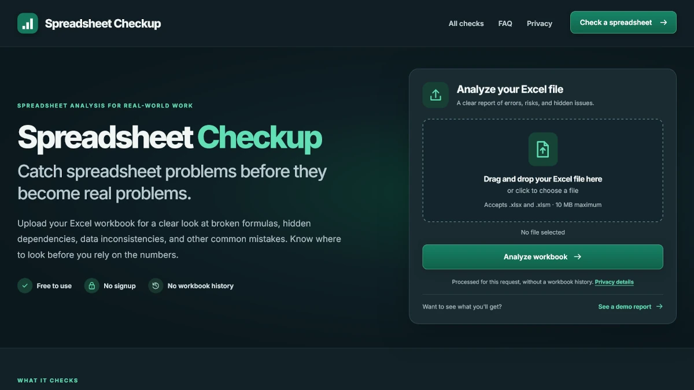

Workbook analysis
Formula integrity, hidden assumptions, cross-sheet dependencies, data quality, validation rules, formatting drift, and structural checks are analyzed without recalculating the workbook.
Web Developer
Focused Utility
A deployed Excel workbook analysis tool that surfaces formula, dependency, structure, formatting, and data-quality problems with clear evidence and suggested next steps.
Python / FastAPI / openpyxl / Jinja / pytest

Project Overview
Spreadsheet Checkup is deliberately small in scope: upload an Excel workbook, analyze it safely, and return findings that help someone decide what deserves attention.
The Challenge
Spreadsheet problems are often contextual. The analyzer needed to detect strong defect signals while clearly separating them from heuristic review items that might be unusual but valid.
The tool checks formulas, hidden dependencies, external links, data consistency, table structure, formatting drift, validation rules, defined names, and other workbook risks. Each finding can include severity, confidence, worksheet and cell location, evidence, an explanation, and a suggested review step.
Results are grouped so a user can start with the strongest signals instead of receiving an undifferentiated wall of warnings. The application also explains coverage limits so the report does not imply that static analysis proves a workbook is correct.
Key Implementation
FastAPI handles uploads and reporting while openpyxl inspects the workbook. The same analysis can be consumed through the browser or through a JSON API.
Formula integrity, hidden assumptions, cross-sheet dependencies, data quality, validation rules, formatting drift, and structural checks are analyzed without recalculating the workbook.
Findings include severity, confidence, evidence, plain-language explanations, filters, per-sheet statistics, and suggested next steps.
The analyzer is available through a multipart JSON API, and results can be downloaded as JSON or CSV for additional review.
Upload size, workbook expansion, worksheet size, formula counts, noisy finding categories, and analyzer concurrency are bounded.
Testing + Hardening
The project uses several layers of automated validation because a spreadsheet checker is only useful if its own results are dependable.
Privacy + Security
Workbooks are processed for the request without an account or workbook-history feature. File parsing and output paths are hardened around the fact that uploaded spreadsheets are untrusted.
The Result
Spreadsheet Checkup is intentionally narrower than a traditional full-stack portfolio app. That makes the engineering choices, testing strategy, and value of the product easier to understand.
Python, FastAPI, file processing, openpyxl, defensive parsing, API design, automated testing, browser testing, performance profiling, security hardening, and Render deployment.
I prioritized useful findings and false-positive control over simply increasing the number of checks. The goal is a report someone can actually act on.
Next case study
Dan Ross Portfolio